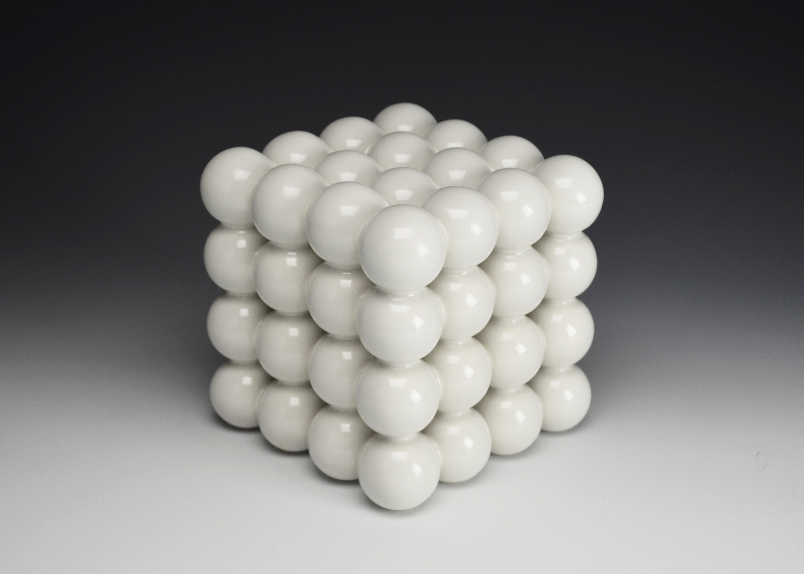

In the mathematical field of numerical analysis, De Casteljau's algorithm is a recursive method to evaluate polynomials in Bernstein form or Bézier curves, named after its inventor Paul de Casteljau. De Casteljau's algorithm can also be used to split a single Bézier curve into two Bézier curves at an arbitrary parameter value.
Although the algorithm is slower for most architectures when compared with the direct approach, it is more numerically stable.
Title

Waxy and quivering, jocks fumble the pizza